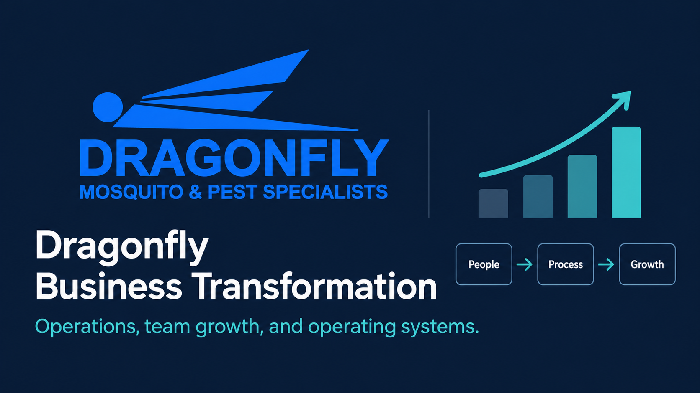
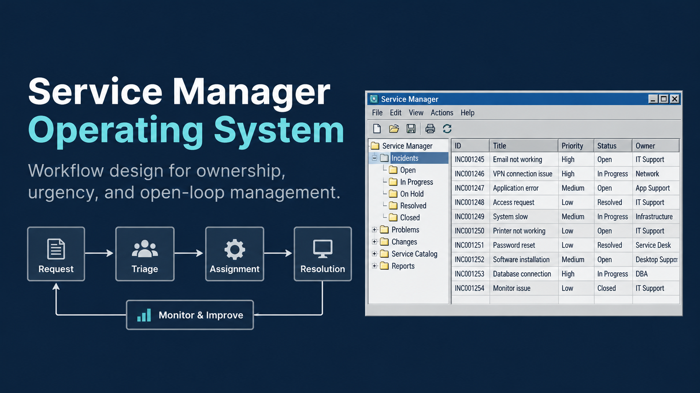
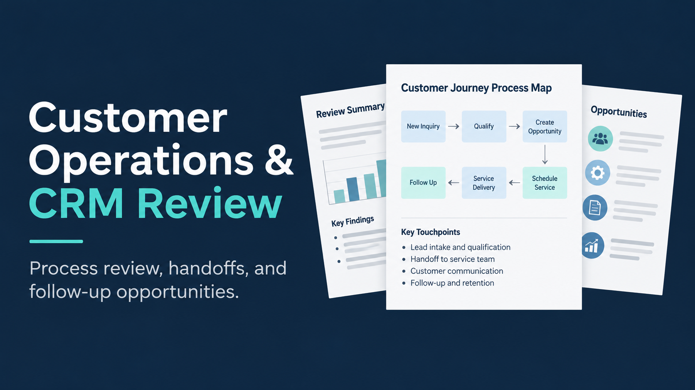
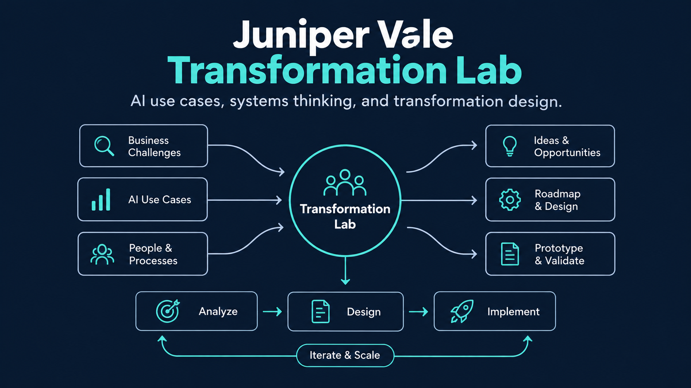

Operations & Business Performance
Workforce planning, staffing, budgets, pricing, service profitability, labor utilization, quality, customer delivery and operating standards.
Explore operations experience ↗Operations & Program Management Leader
I co-built Dragonfly Mosquito & Pest Specialists and helped grow it from 4 to 21 employees, making real decisions about people, pricing, service delivery, and profitability. I bring that experience to leading turnarounds and building practical systems that make everyday work better.
I know what a decision costs, because I've paid for it.
Woodstock, Georgia · Greater Atlanta Area
Featured work
Real business outcomes and implementation work come first. Independent technical labs are labeled and linked to their source, assumptions and limitations.

REAL BUSINESS LEADERSHIP
Co-built and helped scale a service business from 4 to 21 employees with approximately $2.5M in revenue over two years, taking responsibility for people, pricing, delivery and operations.
REAL REGIONAL LEADERSHIP
Helped turn around an underperforming 15-person team and later led three teams, three reporting managers and approximately 48 employees. The work centered on coaching, clearer KPIs and better management routines.

REAL CONSULTING & CONFIGURATION
Google Workspace and Gemini workflow changes that cut measured manual email triage time by 50%, with urgent alerts, clear ownership, follow-through and daily briefings.
REAL PROJECT & AGILE WORK
Coordinated schedules, stakeholders, dependencies and distributed software project work, including Scrum routines, Jira and Confluence.

REAL BUSINESS PROCESS REVIEW
Reviewed customer intake, escalations, CRM handoffs and follow-up ownership; developed recommendations rather than claiming implemented results.

INDEPENDENT SYNTHETIC CASE
An independent transformation lab using synthetic data and simulated outcomes. Its interactive model connects operating economics, implementation controls and business decisions.
What I do
Because I've been responsible for the operating result, I know a good plan matters only when the team, the workflow and the system work together.
Workforce planning, staffing, budgets, pricing, service profitability, labor utilization, quality, customer delivery and operating standards.
Explore operations experience ↗Business requirements, workstreams, dependencies, stakeholder alignment, risks, testing, implementation and sustainable handoffs.
Explore project work ↗Process mapping, software selection, workflow configuration, reporting, exception management and automation with human oversight.
Explore AI implementation ↗How I approach change
Find the real constraint, make the trade-offs explicit, organize the fix and measure what actually changed.
Examine the workflow, financial impact and underlying constraint.
Set requirements, ownership, target outcomes and delivery risks.
Coordinate people, processes, systems, testing and adoption.
Measure results, resolve exceptions and establish accountability.
About Jeff
Co-building Dragonfly taught me how closely people, money, and day-to-day execution are connected. As the business grew from 4 to 21 employees, I made decisions about hiring, compensation, pricing, scheduling, equipment, and customer delivery while helping guide its financial direction.
At Safe Haven, I helped turn around a struggling team, developed managers, shortened onboarding and established operating practices adopted more broadly. I don't just run teams. I make the people running them better. Earlier at TogetherHealth, I ranked #1 among roughly 350 individual producers before supervising approximately 25 licensed professionals and leading a top-performing enrollment team.
My nonprofit project work, consulting and independent systems projects add structured delivery to that operating experience. I hold degrees in Operations Management and Computer Information Systems, plus PMP, CSM and CSPO certifications.
I bring an owner's perspective to business decisions, the discipline to deliver change and the initiative to build a better system instead of accepting a broken one.
Skills & tools
Practical methods and platforms from frontline leadership, project execution and technical implementation work.
Staffing · Routing · Service economics · Quality · PestPac · FieldRoutes · GorillaDesk · Jobber · Route4Me · QuickBooks Online · SecurityTrax
Requirements · Project planning · Stakeholder coordination · Dependencies · Risk tracking · UAT · Adoption · Jira · Confluence · Scrum
Google Workspace · Gmail · Gemini · Workspace Studio · Workflow design · Human oversight
Excel financial models · KPI analysis · Power BI · Process mapping · SQL case work · Scenario analysis · Release testing
Platforms include systems used or evaluated in operating roles and clearly labeled independent case work.
Explore case studies, executive briefs, models, project documentation and technical evidence. Synthetic outcomes are distinguished from real results.
Get in touch
I'm interested in operations leadership, project and program management, and implementation roles where ownership, good judgment and hands-on execution matter.